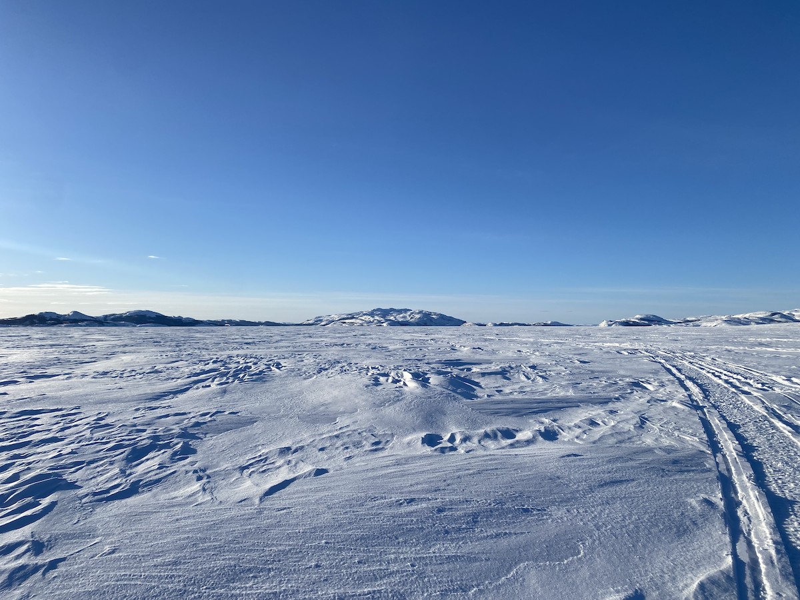
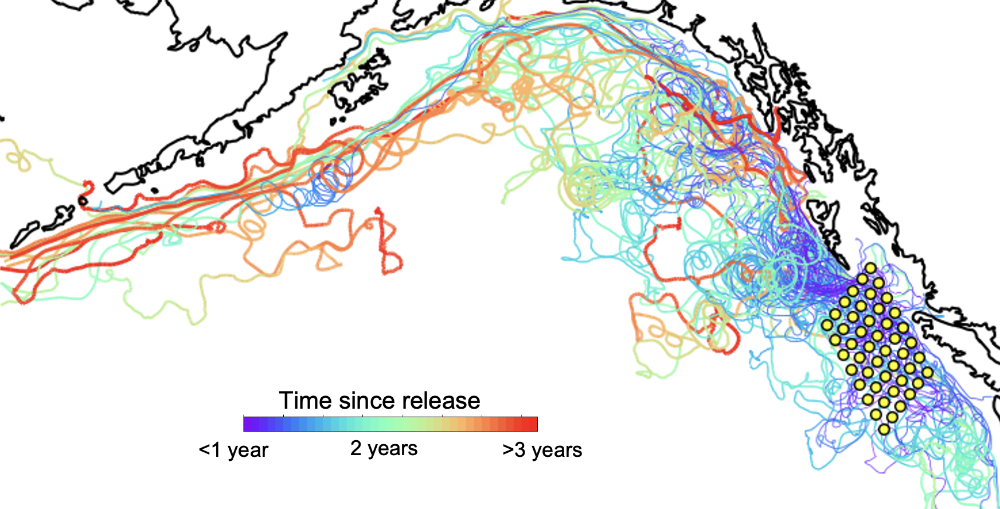
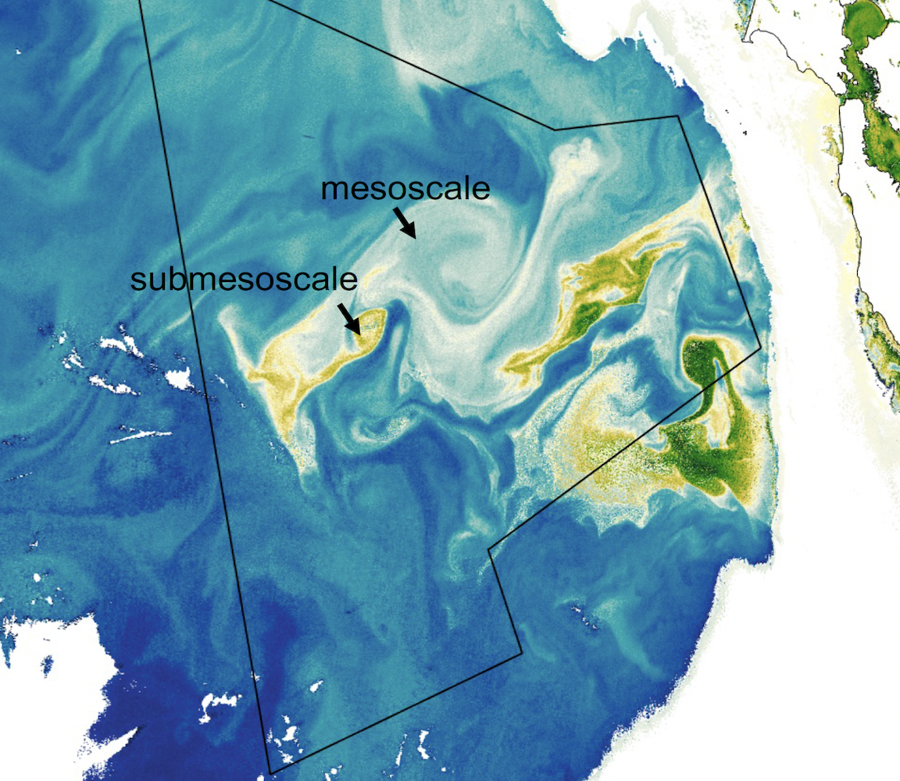
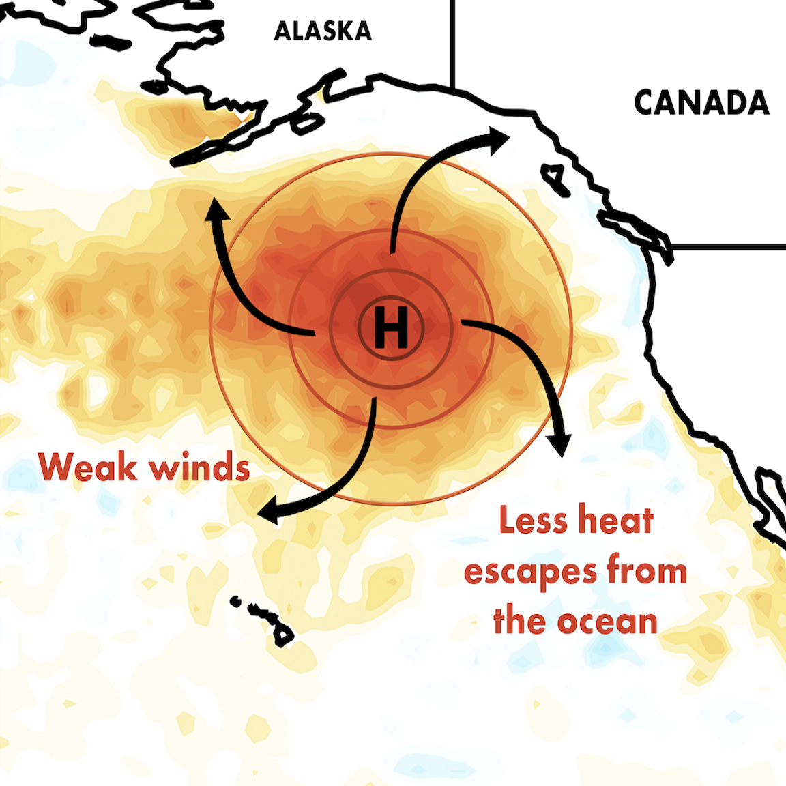

Research
My research bridges the gap between physical oceanography and marine ecosystems. I combine atmospheric and Lagrangian modeling with field observations, community-led monitoring, and bioacoustics to understand ocean dynamics and climate impacts.
Underwater Acoustics & Whale Monitoring
Description about your acoustics and whale monitoring work goes here...

Coastal Monitoring & Indigenous Partnerships
The Community Fishers’ program at Ocean Networks Canada supports Indigenous coastal communities and organizations throughout Canada to monitor ocean conditions within their territories. We are establishing baselines for ocean conditions (temperature, salinity, chlorophyll, oxygen), to better understand changes and impacts on marine ecosystems. The communities are based in British Columbia, NewfoundLand & Labrador, Nunatsiavut, Nunavik, and Nunavut.

Gulf of Alaska Transport Dynamics
The Gulf of Alaska supports important fisheries that are highly vulnerable to large-scale climate extremes like ENSO and marine heatwaves. My research investigates how these major climate drivers alter the transport of nutrient-rich coastal waters into the nutrient-depleted basin interior. I use Lagrangian particle tracking models to simulate and analyze the pathways of coastal waters across large-scale currents and mesoscale eddies.

Submesoscale Dynamics & Biophysical Interactions
Submesoscale dynamics are ocean motions that happen on scales of 1–10 kilometers. Using high-resolution observations of ocean physics and biology from the S-MODE IOP2 2023 expedition aboard the R/VSally Ride. I study how biophysical interactions within submesoscale features impact phytoplankton biomass and distribution. This work contributes to larger efforts to assess the ocean's carbon transport and cycling.

Marine Heatwaves & Climate Extremes
Marine heatwaves are prolonged periods of hotter-than-usual sea surface temperatures. Using an atmospheric model (WRF), I investigated how these events feed back into the atmosphere and modulate rainfall on land. I am also interested in the impacts of these extremes on marine ecosystem disruptions, including coral bleaching, dissolved oxygen supplies, and shifts in species distributions.
